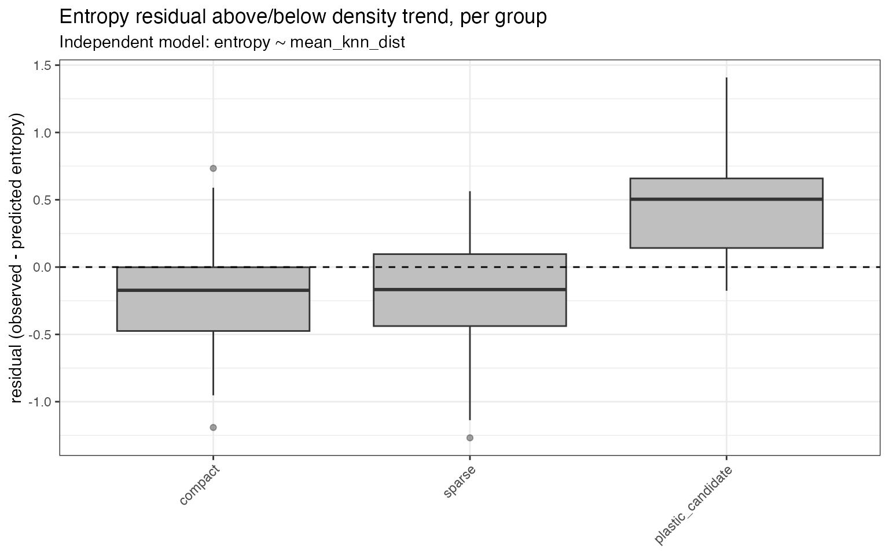
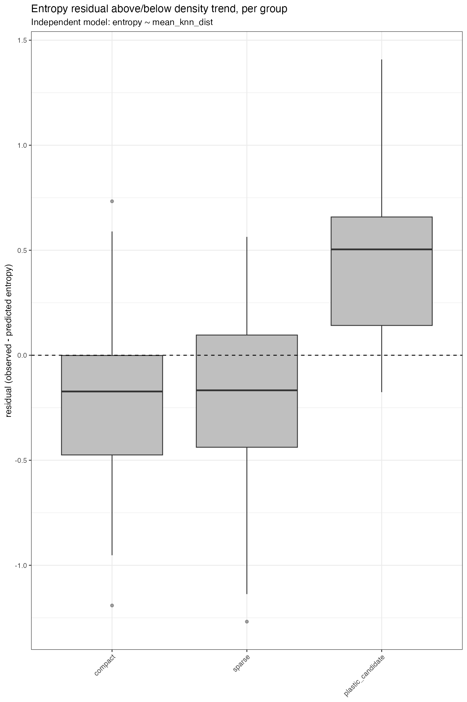
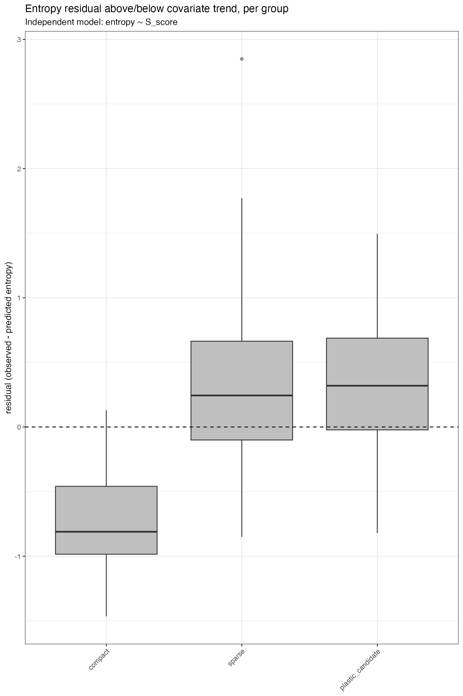
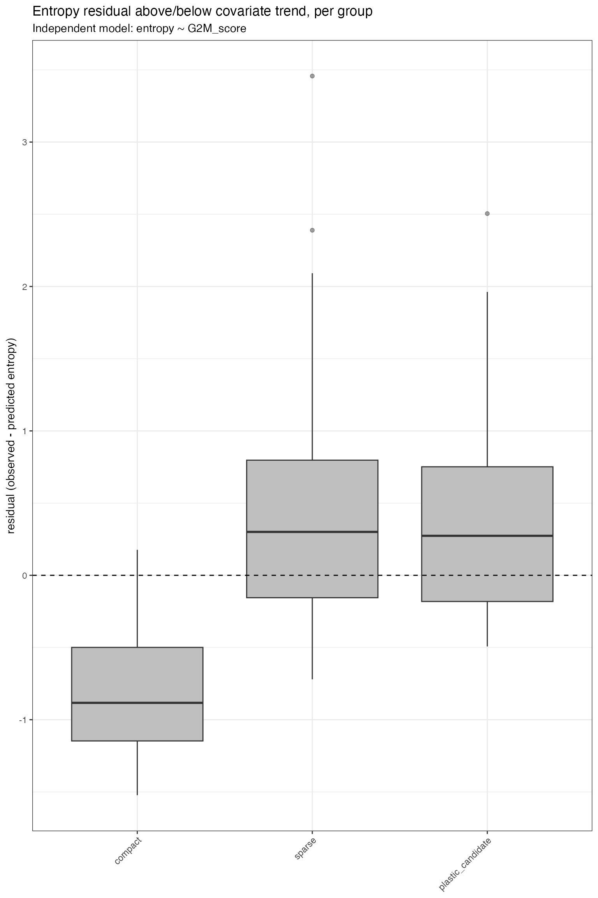
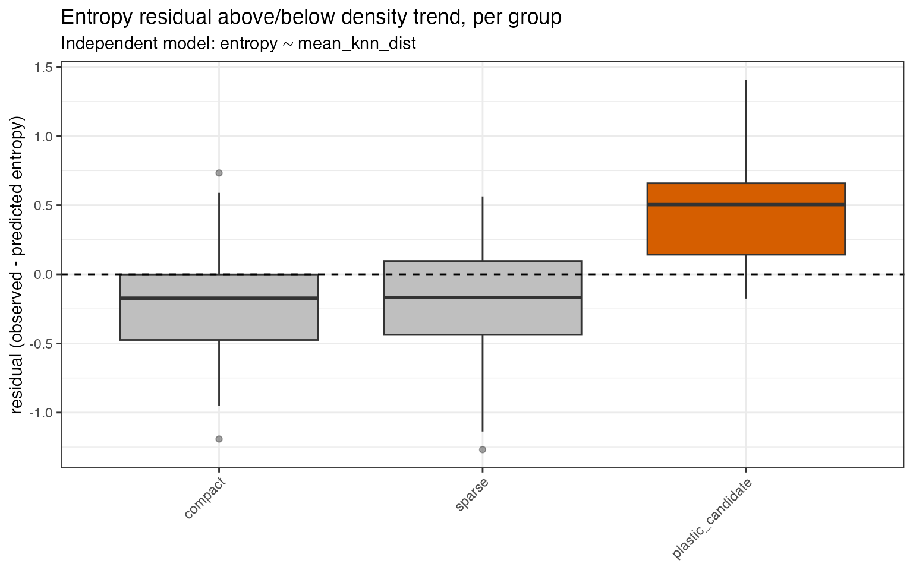

Diagnosing Density Confounding in Entropy Scores
entropy_density_diagnostic.RmdMotivation: why density matters
The entropy score measures cell-to-cell transcriptional variability within a cell’s (k)-nearest-neighbour neighbourhood. We often interpret a high score as evidence of high plasticity, but local geometry can create the same pattern.
Imagine a compact population and a sparse population in the same embedding. Cells in the sparse population have looser neighbourhoods: even their nearest neighbours are relatively far away. Those neighbours are therefore more likely to differ transcriptionally, which can mechanically increase the measured variability and entropy. A cell may consequently receive a high entropy score because it is unusual or isolated, rather than because it belongs to a truly plastic state.
Before trusting a high-entropy population, it is useful to ask a narrower question: is its entropy distinguishable from an effect of local neighbourhood density?
What the diagnostic does
entropy_density_diagnostic() performs four main
checks:
- It measures local sparsity as the mean distance to each cell’s (k) nearest neighbours. Larger values mean a sparser neighbourhood.
- It reports the global Spearman correlation between entropy and mean neighbour distance.
- It fits
entropy ~ densityand returns a residual for every cell. - If a Seurat metadata column is supplied as
group, it summarizes and plots those residuals by group.
The residual is observed entropy minus predicted entropy:
- a residual near zero means that entropy is close to what the model predicts;
- a positive residual means entropy is higher than the predictor would suggest;
- a negative residual means entropy is lower than the predictor would suggest.
For a group, residuals centred near zero indicate that its entropy is not separable from the density trend. A group clearly above zero has entropy beyond what density alone predicts and is therefore more interesting for follow-up.
Crucial caveat: this is a diagnostic, not a correction
Do not use these residuals as “corrected entropy.”
A genuinely plastic biological state may itself occupy a diffuse, sparse part of an embedding. Density and plasticity can therefore be biologically linked, rather than acting as independent technical and biological variables. Regressing entropy on density can remove real biological signal as easily as it can reveal a geometric association.
This function flags whether an entropy signal is separable from density; it does not purify the score or establish causal direction. A group whose entropy is explained by density is not proven to be non-plastic. It is simply not distinguishable from a density effect using entropy alone. Orthogonal evidence is needed to make a biological claim.
A self-contained example
The following simulation creates a small Seurat object, a two-dimensional embedding, three cell states, and an entropy-like score. One state is made more spatially diffuse, while another receives additional entropy not fully driven by its embedding density.
library(Entropy)
set.seed(2026)
n_per_group <- 40L
n_cells <- 3L * n_per_group
cell_ids <- paste0("cell_", seq_len(n_cells))
state <- factor(
rep(c("compact", "sparse", "plastic_candidate"), each = n_per_group),
levels = c("compact", "sparse", "plastic_candidate")
)
# A minimal count matrix is sufficient to create the Seurat object.
counts <- matrix(
rpois(30L * n_cells, lambda = 2),
nrow = 30L,
dimnames = list(paste0("gene_", seq_len(30L)), cell_ids)
)
seu <- SeuratObject::CreateSeuratObject(counts = counts)
seu$state <- state
# Compact, sparse, and candidate-plastic regions of an embedding.
embedding <- rbind(
cbind(rnorm(n_per_group, 0, 0.35), rnorm(n_per_group, 0, 0.35)),
cbind(rnorm(n_per_group, 4, 1.10), rnorm(n_per_group, 0, 1.10)),
cbind(rnorm(n_per_group, -4, 0.55), rnorm(n_per_group, 0, 0.55))
)
rownames(embedding) <- cell_ids
colnames(embedding) <- c("PC_1", "PC_2")
# Simulate two possible biological/technical covariates.
seu$S_score <- rnorm(n_cells)
seu$G2M_score <- 0.45 * seu$S_score + rnorm(n_cells, sd = 0.9)
# Construct an entropy-like response with density, cell-cycle, and group effects.
k <- 10L
distance_matrix <- as.matrix(stats::dist(embedding))
diag(distance_matrix) <- Inf
simulated_density <- apply(distance_matrix, 1L, function(x) {
mean(sort(x)[seq_len(k)])
})
entropy <-
0.7 * as.numeric(scale(simulated_density)) +
0.30 * seu$S_score +
0.65 * (state == "plastic_candidate") +
rnorm(n_cells, sd = 0.25)
entropy <- entropy - min(entropy) + 0.1
names(entropy) <- cell_idsThis entropy vector is simulated only to make the vignette reproducible. In a real analysis, use the per-cell score produced by the entropy workflow and the same embedding and (k) that defined its neighbourhoods.
Basic usage
The group argument is the name of a column in the Seurat
object’s metadata. The function checks that this column exists and that
cell ordering agrees among the Seurat object, entropy vector, and
embedding.
density_diagnostic <- entropy_density_diagnostic(
seu = seu,
entropy = entropy,
embedding = embedding,
k = k,
group = "state"
)
#> model group n mean_residual median_residual
#> mean_knn_dist compact 40 -0.2281943 -0.1724540
#> mean_knn_dist sparse 40 -0.2217115 -0.1669791
#> mean_knn_dist plastic_candidate 40 0.4499057 0.5040642The global entropy-density association is returned in
$correlation:
density_diagnostic$correlation
#> rho p_value
#> 7.879853e-01 1.292546e-26The density-only regression is stored under the predictor name:
density_diagnostic$regressions$mean_knn_dist
#> $coefficients
#> term estimate std_error t_value p_value
#> 1 (Intercept) 0.6506843 0.08669134 7.505758 1.265433e-11
#> 2 mean_knn_dist 2.7465817 0.16413549 16.733624 6.122799e-33
#>
#> $r_squared
#> [1] 0.7035282
#>
#> $adjusted_r_squared
#> [1] 0.7010157
#>
#> $model_p_value
#> [1] 6.122799e-33$residuals is a data frame with one column per
independent model. With no extra covariates, it contains the
density-model residuals:
head(density_diagnostic$residuals)
#> mean_knn_dist
#> cell_1 -0.6564403
#> cell_2 -0.6374221
#> cell_3 -0.3249032
#> cell_4 -0.1695711
#> cell_5 0.4152482
#> cell_6 -0.1972165The group summary reports the number of cells and the mean and median residual for each group:
density_diagnostic$group_summary
#> model group n mean_residual median_residual
#> 1 mean_knn_dist compact 40 -0.2281943 -0.1724540
#> 2 mean_knn_dist sparse 40 -0.2217115 -0.1669791
#> 3 mean_knn_dist plastic_candidate 40 0.4499057 0.5040642The matching boxplot is a named element of $plots:
density_diagnostic$plots$mean_knn_dist
The dashed horizontal line marks zero. Groups centred on that line have entropy close to the density prediction. Groups clearly above it have positive excess entropy relative to the density-only trend.
Checking other possible confounds independently
Cell cycle is another common driver of entropy because cycling cells can co-express several transcriptional programs. Sequencing depth can be checked in the same way.
Each supplied covariate is deliberately tested in its own independent model. For the example below, the models are:
-
entropy ~ mean_knn_dist; -
entropy ~ S_score; -
entropy ~ G2M_score.
Density is always present as its own model. Density and cell-cycle covariates are not combined, and the covariates are not combined with one another. This means each plot answers whether entropy is separable from one predictor at a time; it is not a multivariable adjustment.
covariates <- seu[[]][, c("S_score", "G2M_score"), drop = FALSE]
full_diagnostic <- entropy_density_diagnostic(
seu = seu,
entropy = entropy,
embedding = embedding,
k = k,
group = "state",
covariates = covariates
)
#> model group n mean_residual median_residual
#> mean_knn_dist compact 40 -0.2281943 -0.1724540
#> mean_knn_dist sparse 40 -0.2217115 -0.1669791
#> mean_knn_dist plastic_candidate 40 0.4499057 0.5040642
#> S_score compact 40 -0.7604647 -0.8107051
#> S_score sparse 40 0.3660264 0.2440652
#> S_score plastic_candidate 40 0.3944382 0.3193681
#> G2M_score compact 40 -0.8329289 -0.8830238
#> G2M_score sparse 40 0.4632758 0.3005813
#> G2M_score plastic_candidate 40 0.3696531 0.2734729
names(full_diagnostic$regressions)
#> [1] "mean_knn_dist" "S_score" "G2M_score"
names(full_diagnostic$plots)
#> [1] "mean_knn_dist" "S_score" "G2M_score"Each regression contains only its own predictor:
full_diagnostic$regressions$S_score
#> $coefficients
#> term estimate std_error t_value p_value
#> 1 (Intercept) 1.9417817 0.07343098 26.443632 2.041441e-51
#> 2 S_score 0.5244857 0.07711397 6.801437 4.530886e-10
#>
#> $r_squared
#> [1] 0.2816247
#>
#> $adjusted_r_squared
#> [1] 0.2755367
#>
#> $model_p_value
#> [1] 4.530886e-10
full_diagnostic$regressions$G2M_score
#> $coefficients
#> term estimate std_error t_value p_value
#> 1 (Intercept) 1.8818703 0.08410739 22.374611 2.864696e-44
#> 2 G2M_score 0.2044355 0.09055925 2.257478 2.581742e-02
#>
#> $r_squared
#> [1] 0.04140018
#>
#> $adjusted_r_squared
#> [1] 0.03327646
#>
#> $model_p_value
#> [1] 0.02581742Each predictor also receives its own residual boxplot:
full_diagnostic$plots$mean_knn_dist
full_diagnostic$plots$S_score
full_diagnostic$plots$G2M_score
The correlation matrix helps reveal when density and the proposed covariates are themselves entangled:
full_diagnostic$covariate_correlations
#> mean_knn_dist S_score G2M_score
#> mean_knn_dist 1.00000000 0.1961803 -0.01296618
#> S_score 0.19618029 1.0000000 0.32375165
#> G2M_score -0.01296618 0.3237516 1.00000000A strong correlation here is a warning that apparently separate confounds may track the same cells. It does not turn the independent regressions into a multivariable causal analysis.
Options
Log-transforming density
Neighbour distances are often right-skewed. Set
log_density = TRUE to fit the density-only model using
log(mean_knn_dist). The returned raw
$mean_knn_dist values are unchanged.
log_diagnostic <- entropy_density_diagnostic(
seu = seu,
entropy = entropy,
embedding = embedding,
k = k,
group = "state",
log_density = TRUE
)
#> model group n mean_residual median_residual
#> log_mean_knn_dist compact 40 -0.1102553 0.01594764
#> log_mean_knn_dist sparse 40 -0.2319854 -0.27361770
#> log_mean_knn_dist plastic_candidate 40 0.3422408 0.36047009
names(log_diagnostic$regressions)
#> [1] "log_mean_knn_dist"Highlighting a group
Use cluster_of_interest to highlight one metadata value
in every returned boxplot.
highlighted <- entropy_density_diagnostic(
seu = seu,
entropy = entropy,
embedding = embedding,
k = k,
group = "state",
cluster_of_interest = "plastic_candidate"
)
#> model group n mean_residual median_residual
#> mean_knn_dist compact 40 -0.2281943 -0.1724540
#> mean_knn_dist sparse 40 -0.2217115 -0.1669791
#> mean_knn_dist plastic_candidate 40 0.4499057 0.5040642
highlighted$plots$mean_knn_dist
Choosing (k)
Use the same k that was used to compute entropy.
Changing it changes the biological scale of the density measurement, so
a different value no longer checks the exact neighbourhood underlying
the entropy score.
Saving plots
Plots are returned but not saved by default. Supplying
plot_file writes 300-dpi PNG files. When several models are
present, the function appends each model name and saves one file per
model. This example writes only to the R session’s temporary directory
and then removes the files.
temporary_plot <- tempfile("entropy-diagnostic-", fileext = ".png")
saved_diagnostic <- entropy_density_diagnostic(
seu = seu,
entropy = entropy,
embedding = embedding,
k = k,
group = "state",
covariates = covariates,
plot_file = temporary_plot
)
#> model group n mean_residual median_residual
#> mean_knn_dist compact 40 -0.2281943 -0.1724540
#> mean_knn_dist sparse 40 -0.2217115 -0.1669791
#> mean_knn_dist plastic_candidate 40 0.4499057 0.5040642
#> S_score compact 40 -0.7604647 -0.8107051
#> S_score sparse 40 0.3660264 0.2440652
#> S_score plastic_candidate 40 0.3944382 0.3193681
#> G2M_score compact 40 -0.8329289 -0.8830238
#> G2M_score sparse 40 0.4632758 0.3005813
#> G2M_score plastic_candidate 40 0.3696531 0.2734729
basename(saved_diagnostic$plot_files)
#> [1] "entropy-diagnostic-e9d16bad73cc_mean_knn_dist.png"
#> [2] "entropy-diagnostic-e9d16bad73cc_S_score.png"
#> [3] "entropy-diagnostic-e9d16bad73cc_G2M_score.png"
unlink(saved_diagnostic$plot_files)Interpreting the result: a short decision guide
- Start with the global correlation. A strong entropy-distance Spearman correlation means sparse cells tend to have high entropy, so interpret the score cautiously.
- Inspect the density residuals by group. A group centred near zero is not distinguishable from a density effect using entropy alone. Report that ambiguity honestly and seek orthogonal evidence.
- Inspect each additional diagnostic separately. If a group remains above zero in the density, S-score, and G2M-score plots, its entropy is not explained by any one of those predictors alone. Because these are separate models, this is not evidence of joint multivariable independence.
- Treat positive residuals as a stronger lead, not proof. A group clearly above zero in the density diagnostic is a stronger candidate for genuine plasticity, but confirmation should come from independent biological data, perturbation, lineage evidence, or another appropriate assay.
This diagnostic is a screening and quality-control step. It characterizes a potential density confound; it does not correct entropy, determine causality, or prove plasticity.